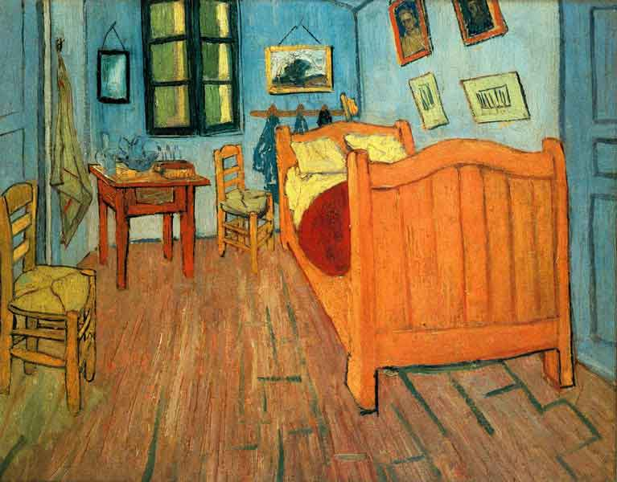

Vincent Willem van Gogh was a major Post-Impressionist painter. He was a Dutch artist whose work had a far-reaching influence on 20th-century art. His output includes portraits, self portraits, landscapes and still lifes of cypresses, wheat fields and sunflowers.
